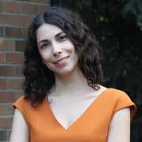

Duygu Özge Sarısoy
Associate Professor · Linguist · Researcher
Download CV
Contact
Supervised Theses
Fatma Nur Öztürk (2023) – Theory of Mind and Metaphor Processing
Semih Can Aktepe (2022) – Eye-tracking and counterfactual reasoning
Süleyman Yaman (2023) – Garden-path sentence processing in L2 learners
Galiya Saraç (2024–) – Implicit Causality in Turkish
Ayşe Gül Özay Demircioğlu (2024–) – Presupposition in Turkish children
Honors & Editorial Work
Thesis of the Year Award – Mustafa Parlar Foundation (2011)
Editor,
Dil Dergisi
(2022)
Co-editor, Linguistic Studies Series (2024)